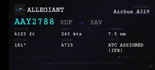
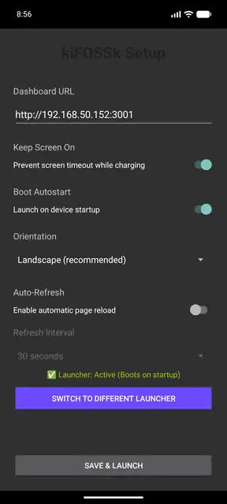

kiFOSSk
إنترنت ومتصفحات
kiFOSSk is a lightweight, open-source kiosk browser designed to turn your Android device into a dedicated display for remote dashboards. Whether you're monitoring ADS-B flights, viewing Home Assistant dashboards, or running digital signage, kiFOSSk provides a reliable, privacy-first solution. Key Fe
✓ ترخيص مفتوح (MIT) · آخر تحديث: 2026-10-27
1.1.4الإصدار
2.6 MBالحجم
MITالرخصة
Open in Kanzتحميل APK (2.6 MB)
Download APK
SHA-256: 992b9ca918278ddcf1a6329b599d99028e03f3cadba642138cfdd3ec56711f31


امسح الكود لفتح صفحة التطبيق
Scan to open this app page
لو كنز مش متثبت عندك: نزّل متجر كنز.
Not installed? Get the Kanz store.